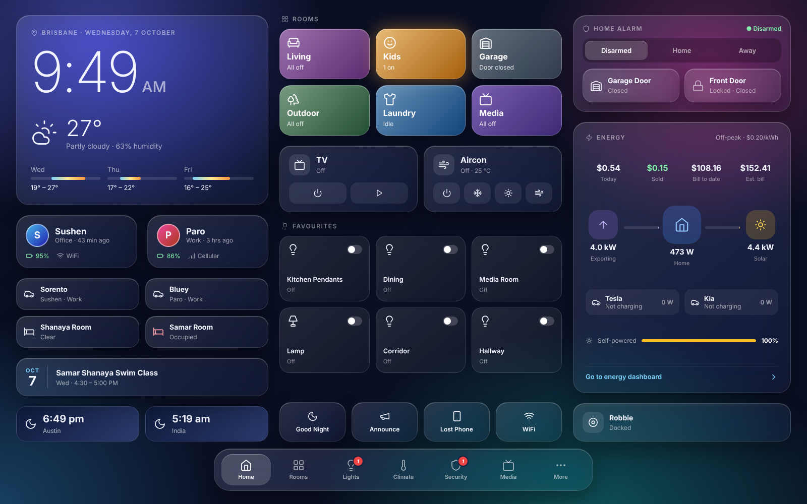
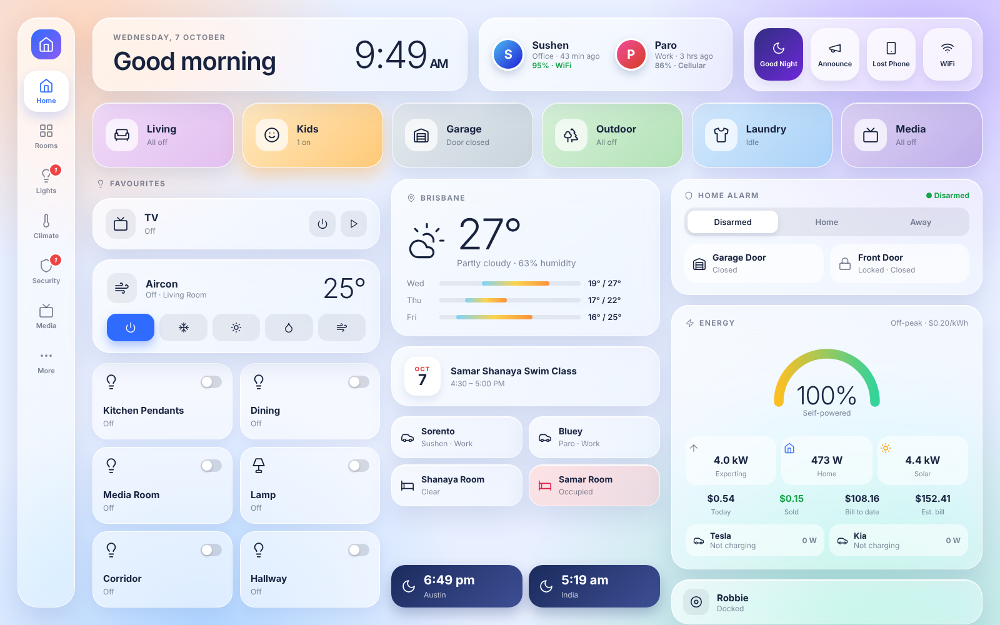
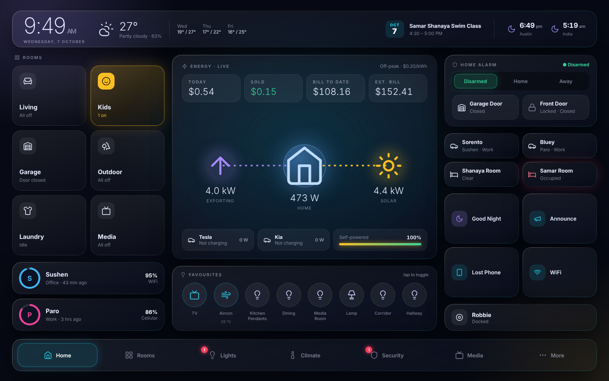

Home dashboard – 3 concepts (16:10, landscape, no scroll)

A · Aurora
Dark glass bento, floating bottom dock

B · Daylight
Light frosted glass, left rail, pastel rooms

C · Obsidian
Energy-first control room, neon glow